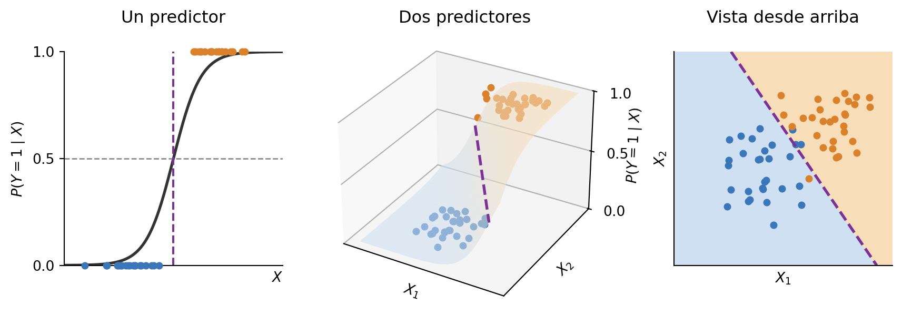

6 Modelos sencillos, pero efectivos - Parte 3
En este capítulo presentamos la regresión logística. Si bien es un poco menos conocida que la regresión lineal, ambas están íntimamente relacionadas desde lo conceptual, y su uso está ampliamente extendido.
6.1 Regresión logística
La regresión logística es un modelo para clasificación, aunque el nombre pueda hacer creer otra cosa. En su versión más sencilla sirve para clasificación binaria, y, si bien se puede extender a problemas multiclase, aquí nos concentraremos en el caso binario.
Empecemos por una idea sencilla. En el caso binario, con clases A y B, podríamos hacer el siguiente experimento:
- Codificar una clase como 0 y la otra como 1. Es decir, si las etiquetas eran \(\mathbf{y} = [A, B, B, A, \dots, B]\), hacemos \(\mathbf{y} = [0, 1, 1, 0, \dots, 1]\).
- Ajustar una regresión lineal para que prediga \(Y\) en función de los predictores \(X\), es decir, \(f(X) = \beta_0 + \sum_{j=1}^{p} X_j \beta_j\) o, de manera más compacta, \(f(X) = X^T \beta\).
- Al momento de predecir para una instancia \(x\), asignar A si \(x^T \hat{\beta} < 0.5\) y B si \(x^T \hat{\beta} \geq 0.5\).
Esta idea, la de resolver un problema de clasificación con una regresión lineal, se puede aplicar y, en muchos casos, anda muy bien. Sin embargo, en muchos otros puede traer problemas. Por un lado, es sensible a valores extremos de los atributos: una instancia muy alejada puede desplazar la frontera de decisión, incluso si está del lado correcto. Por otro lado, si bien se puede extender a problemas multiclase, puede ocurrir que una clase quede oculta por las otras (lo que se conoce como el problema de masking).
Pero en realidad uno de los problemas más grandes es qué representan las predicciones. En una clasificación binaria, esperaríamos modelar la probabilidad de pertenecer a una clase dados los atributos, es decir, la probabilidad condicional \(P(Y = 1 \mid X)\). Con etiquetas 0 y 1, eso es lo que intenta aproximar la regresión lineal, ya que \(E[Y \mid X] = P(Y = 1 \mid X)\). Sin embargo, nada garantiza que los valores predichos estén entre 0 y 1, por lo que no siempre se pueden interpretar como probabilidades.
Por suerte, la solución es sencilla. Podemos recurrir a la función logística o sigmoide1. La función sigmoide tiene la siguiente forma:
\[ \sigma(z) = \frac{1}{1+ e^{-z}}\]
donde \(z\) puede tomar cualquier valor real. Notar que, cuando \(z \to +\infty\), la función tiende a 1, mientras que cuando \(z \to -\infty\), tiende a 0. Además, siempre está acotada entre esos dos valores, por lo que se la puede interpretar como una probabilidad.
Combinando la función lineal que usamos antes con la función sigmoide, podemos obtener la siguiente expresión:
\[ f(X) = \frac{1}{1+ e^{-(\beta_0 + \sum_{j=1}^{p} X_j \beta_j)}}\]
o, usando nuevamente la forma compacta,
\[f(X) = \frac{1}{1+ e^{-X^T \beta}}\]
De esta forma conseguimos una expresión que está acotada entre 0 y 1, y además es una función de los predictores. La regresión logística asume que esta expresión modela la probabilidad de la clase positiva:
\[P(Y = 1 \mid X) = \frac{1}{1+ e^{-X^T \beta}}\]
Su uso sigue exactamente los mismos pasos que definimos anteriormente:
- Codificar una clase como 0 y la otra como 1. Es decir, si las etiquetas eran \(\mathbf{y} = [A, B, B, A, \dots, B]\), hacemos \(\mathbf{y} = [0, 1, 1, 0, \dots, 1]\).
- Ajustar una regresión logística para que modele \(P(Y = 1 \mid X)\) en función de los predictores \(X\), es decir, \(P(Y = 1 \mid X) = \frac{1}{1+ e^{-X^T \beta}}\).
- Al momento de predecir para una instancia \(x\), calcular \(\hat{p} = \frac{1}{1+ e^{-x^T \hat{\beta}}}\), y asignar A si \(\hat{p} < 0.5\) y B si \(\hat{p} \geq 0.5\).
6.1.1 Fronteras de decisión
¿Qué tipo de frontera de decisión obtenemos con la regresión logística? Se puede mostrar que, en el caso de un solo predictor, obtenemos un valor umbral que hace de frontera. En el caso de dos predictores, una recta. Y, en el caso general, con \(p\) predictores, obtenemos un hiperplano en ese espacio, es decir, una superficie plana de \(p-1\) dimensiones (Figura 6.1).
6.1.1.1 Obtención matemática de las fronteras
Para obtener la frontera, basta ver en qué valores de \(X\) se obtiene justo el umbral de 0.5.
\[P(Y = 1 \mid X) = \frac{1}{1+ e^{-X^T \beta}} = 0.5\]
Como el numerador es 1, para que dé 0.5 el denominador tiene que ser 2.
\[1+ e^{-X^T \beta} = 2\]
Entonces, \(e^{-X^T \beta} = 1\). Para que eso se cumpla, el exponente debe ser cero, \(X^T \beta = 0\), que es exactamente un hiperplano. Recomendamos convencerse despejando para el caso más sencillo de dos atributos. No olvidar la ordenada al origen.
Esta cuenta también muestra qué hace cada coeficiente: \(\beta_1, \dots, \beta_p\) determinan la orientación de la frontera, y \(\beta_0\) la desplaza de forma paralela a sí misma. Sin este coeficiente, la frontera estaría obligada a pasar por el origen.
6.1.2 Entrenamiento
¿Cómo entrenamos una regresión logística? Es decir, ¿cómo obtenemos los coeficientes \(\beta\)? Como siempre, necesitamos una función de costo a optimizar y un método para optimizarla. Pero este caso es un poco más complejo que el de la regresión lineal; ahí predecimos números que podemos comparar contra números, mientras que la regresión logística predice probabilidades que queremos comparar contra etiquetas2. Existe una función de costo que hace precisamente esto. No exploraremos sus orígenes en estas notas, pero hay más de una forma de llegar a ella. Se conoce como entropía cruzada, log loss y algunos nombres más. Toma la forma
\[ J(\beta) = -\sum_{i=1}^{N} \left[ y_i \log(\hat{p}_i) + (1 - y_i) \log(1 - \hat{p}_i) \right] \]
donde \(\hat{p}_i = \frac{1}{1+ e^{-x_i^T \beta}}\) es la probabilidad predicha para la instancia \(i\) e \(y_i \in \{0, 1\}\) es su etiqueta. Notar que esta expresión cubre los casos para ambas etiquetas.
\(J(\beta)\) es convexa cuando \(\hat{p}_i\) está dado por la regresión logística. Sin embargo, no tiene solución cerrada, ya que al tomar el gradiente e igualar a cero no obtenemos una expresión que pueda despejarse para obtener una solución. Se debe recurrir a métodos numéricos. Veremos dos métodos muy generales, descenso por gradiente y Newton-Raphson.
6.1.2.1 Descenso por gradiente
Este caso es muy sencillo si ya conocemos el descenso por gradiente aplicado a la regresión lineal. El método es exactamente igual, lo único que cambia es el gradiente. Para obtenerlo, conviene notar que la función sigmoide cumple \(\sigma'(z) = \sigma(z)(1 - \sigma(z))\). Como \(\hat{p}_i = \sigma(x_i^T \beta)\), resulta que \(\frac{\partial \hat{p}_i}{\partial \beta} = \hat{p}_i (1 - \hat{p}_i) \, x_i\). Derivando \(J(\beta)\), ese factor se cancela con los denominadores que aparecen al derivar los logaritmos:
\[\frac{\partial J}{\partial \beta} = -\sum_{i=1}^{N} \left[ \frac{y_i}{\hat{p}_i} - \frac{1 - y_i}{1 - \hat{p}_i} \right] \hat{p}_i (1 - \hat{p}_i) \, x_i = -\sum_{i=1}^{N} (y_i - \hat{p}_i) \, x_i\]
o, de forma matricial,
\[\frac{\partial J}{\partial \beta} = -\mathbf{X}^T (\mathbf{y} - \hat{\mathbf{p}})\]
donde \(\hat{\mathbf{p}}\) es el vector de \(N\) componentes con las probabilidades predichas \(\hat{p}_i\), y \(\mathbf{X}\) incluye la columna de unos. Por lo tanto, el paso de actualización es
\[\beta^{(\tau + 1)} = \beta^{(\tau)} + \eta \mathbf{X}^T (\mathbf{y} - \hat{\mathbf{p}}^{(\tau)})\]
Notar que tiene la misma forma que en la regresión lineal: lo que cambia es que \(\hat{\mathbf{p}}\) depende de \(\beta\) a través de la función sigmoide, en lugar de \(\mathbf{X}\beta\). En cada iteración, entonces, hay que volver a calcular las probabilidades predichas con los coeficientes actuales. Además, conviene estandarizar los atributos: si tienen escalas muy distintas, la función de costo queda muy alargada en algunas direcciones y el método converge más lento.
El gradiente también dice algo sobre la ordenada al origen. Como la primera columna de \(\mathbf{X}\) son unos, igualar a cero la componente correspondiente a \(\beta_0\) da \(\sum_{i=1}^{N} (y_i - \hat{p}_i) = 0\). Es decir, en el óptimo sin regularizar, el promedio de las probabilidades predichas coincide con la proporción de instancias de la clase positiva en el conjunto de entrenamiento.
6.1.2.2 Newton-Raphson
Esta sección solamente es parte del programa de Aprendizaje Automático de UNSAM. De todas maneras, su lectura es bienvenida si genera curiosidad.
El método de Newton-Raphson es un método iterativo para encontrar raíces de funciones. Dada una función \(f(\theta)\), buscamos un valor \(\theta^*\) tal que \(f(\theta^*) = 0\).
Para ello, partimos de un valor inicial \(\theta^{(0)}\) y aproximamos \(f\) por su recta tangente en ese punto:
\[ y = f(\theta^{(0)}) + f'(\theta^{(0)})(\theta - \theta^{(0)}) \]
La raíz de esa recta es nuestra nueva aproximación a la raíz de \(f\):
\[\theta^{(1)} = \theta^{(0)} - \frac{f(\theta^{(0)})}{f'(\theta^{(0)})}\]
Este paso se repite hasta converger. ¿Qué ocurre si, en lugar de aplicarlo a la función, lo aplicamos a su derivada? Encontramos los puntos donde la derivada se anula, es decir, los puntos críticos de \(f\), entre los que están sus mínimos. La actualización en este caso es
\[\theta^{(\tau + 1)} = \theta^{(\tau)} - \frac{f'(\theta^{(\tau)})}{f''(\theta^{(\tau)})}\]
Notar que ahora necesitamos la derivada segunda.
Finalmente, consideremos una función multivariada, que va de \(\mathbb{R}^p\) a \(\mathbb{R}\). En este caso, la actualización es
\[\theta^{(\tau + 1)} = \theta^{(\tau)} - \mathbf{H}^{-1}(\theta^{(\tau)}) \nabla f(\theta^{(\tau)})\]
Es decir, la derivada se reemplaza por el gradiente (el vector de derivadas parciales) y la derivada segunda, por la matriz Hessiana (la matriz de derivadas parciales segundas):
\[\mathbf{H} = \begin{bmatrix} \frac{\partial^2 f}{\partial \theta_1^2} & \frac{\partial^2 f}{\partial \theta_1 \partial \theta_2} & \ldots & \frac{\partial^2 f}{\partial \theta_1 \partial \theta_p} \\ \frac{\partial^2 f}{\partial \theta_2 \partial \theta_1} & \frac{\partial^2 f}{\partial \theta_2^2} & \ldots & \frac{\partial^2 f}{\partial \theta_2 \partial \theta_p} \\ \vdots & \vdots & \ddots & \vdots \\ \frac{\partial^2 f}{\partial \theta_p \partial \theta_1} & \frac{\partial^2 f}{\partial \theta_p \partial \theta_2} & \ldots & \frac{\partial^2 f}{\partial \theta_p^2} \end{bmatrix}\]
6.1.2.2.1 Newton-Raphson para la regresión logística
En la regresión logística, buscamos el \(\beta\) que anula el gradiente de \(J(\beta)\), que ya obtuvimos en la sección anterior:
\[\frac{\partial J}{\partial \beta} = -\sum_{i=1}^{N} (y_i - \hat{p}_i) \, x_i = 0\]
Este es un sistema de ecuaciones no lineales, que podemos resolver con Newton-Raphson. Para eso necesitamos el Hessiano, que se obtiene derivando nuevamente:
\[\mathbf{H} = \frac{\partial^2 J}{\partial \beta \, \partial \beta^T} = \sum_{i=1}^{N} \hat{p}_i (1 - \hat{p}_i) \, x_i x_i^T\]
Notar que \(x_i x_i^T\) es un producto exterior, cuyo resultado es una matriz de \((p+1) \times (p+1)\). Por lo tanto, la actualización de Newton-Raphson es
\[\beta^{(\tau + 1)} = \beta^{(\tau)} - \mathbf{H}^{-1} \frac{\partial J}{\partial \beta}\]
donde tanto el Hessiano como el gradiente se evalúan en \(\beta^{(\tau)}\).
Podemos escribir todo esto de forma matricial. Además de \(\mathbf{y}\), \(\mathbf{X}\) y \(\hat{\mathbf{p}}\), definimos \(\mathbf{W}\), una matriz diagonal de \(N \times N\) con elementos \(W_{ii} = \hat{p}_i (1 - \hat{p}_i)\). Entonces, el gradiente y el Hessiano son
\[\frac{\partial J}{\partial \beta} = -\mathbf{X}^T (\mathbf{y} - \hat{\mathbf{p}})\]
\[\mathbf{H} = \mathbf{X}^T \mathbf{W} \mathbf{X}\]
y la actualización queda
\[\beta^{(\tau + 1)} = \beta^{(\tau)} + (\mathbf{X}^T \mathbf{W}^{(\tau)} \mathbf{X})^{-1} \mathbf{X}^T (\mathbf{y} - \hat{\mathbf{p}}^{(\tau)})\]
Esta expresión ya es suficiente para obtener los coeficientes. Notar que se parece a la del descenso por gradiente, pero en lugar de un paso definido por la tasa de aprendizaje, el paso lo define la derivada segunda (el Hessiano). Por eso, no hay que elegir \(\eta\). Newton-Raphson suele converger en pocas iteraciones, pero cada una requiere resolver un sistema de \((p+1) \times (p+1)\), lo que se vuelve costoso cuando hay muchos atributos. En esos casos, suele convenir el descenso por gradiente.
6.1.3 Regularización
Las penalizaciones L2 (Ridge) y L1 (Lasso) vistas en la regresión lineal se aplican de la misma manera en la regresión logística, y su efecto sobre los coeficientes es análogo. Las funciones de costo quedan
\[J_{L2}(\beta) = -\sum_{i=1}^{N} \left[ y_i \log(\hat{p}_i) + (1 - y_i) \log(1 - \hat{p}_i) \right] + \lambda \sum_{j=1}^{p} \beta_j^2\]
\[J_{L1}(\beta) = -\sum_{i=1}^{N} \left[ y_i \log(\hat{p}_i) + (1 - y_i) \log(1 - \hat{p}_i) \right] + \lambda \sum_{j=1}^{p} |\beta_j|\]
donde, al igual que en la regresión lineal, la ordenada al origen \(\beta_0\) no se penaliza. Y, como vimos en el Capítulo 5, conviene que los atributos estén estandarizados, ya que la penalización depende del tamaño de los coeficientes y este, de la escala de cada atributo.
Así como en la regresión lineal, L1 selecciona variables, mientras que L2 reparte el peso entre atributos correlacionados. Además, en la regresión logística la regularización cumple un rol adicional: si las clases son linealmente separables, el costo sin regularizar no tiene un mínimo finito, ya que agrandar los coeficientes siempre lo reduce. La penalización evita que diverjan, y por ese motivo algunas bibliotecas la traen implementada por defecto.
La función logística o sigmoide no es lo mismo que la regresión logística, así como una función lineal no es una regresión lineal.↩︎
Otra posibilidad es comparar etiquetas predichas contra etiquetas medidas, como en el perceptrón de Rosenblatt, de gran valor histórico pero que no exploraremos en estas notas.↩︎